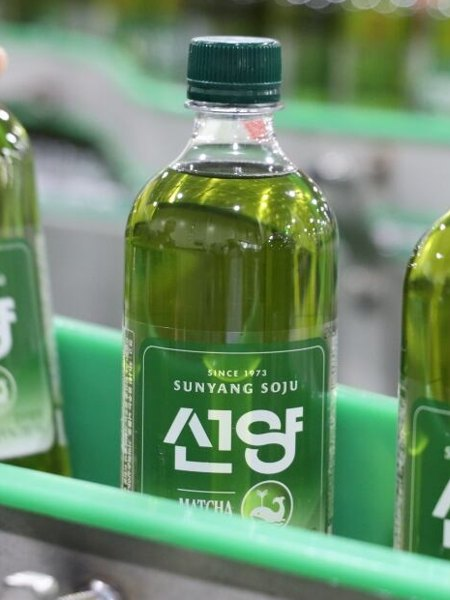

대한민국
소주
가이드
둘러보기
빠른 찾기
타임라인
지역별 브랜드
제조사 현황
제조 방법
선양 말차
2026.04 GS25 단독, '말차코어' 트렌드 반영

분류
희석식
도수
14.9도
출시
2026.04.22
제조사
더맥키스컴퍼니
지역
충청도
이름 유래
선양
브랜드 + 일본식 가루녹차
말차(抹茶)
를 접목한 명칭. '말차코어' 트렌드를 반영해 희석식 소주에 말차 향을 더한 국내 최초 시도.
상세 연혁
2026년 4월 22일 GS25 단독 출시. 5월 31일까지 3,300원 프로모션 진행. 기존 선양(14.9도)과 동일한 제로슈거 베이스에 말차 풍미를 더함.
더맥키스컴퍼니의 다른 소주
선양그린
맑을린
오투린(O2린)
버지니아
맥키스 홈믹싱주
이제우린
선양린 高
선양
선양오크
선양린
착한소주 990
선양 오크소맥
선양 피치우롱
선양 추사
지역별 소주 브랜드 전체 보기 →